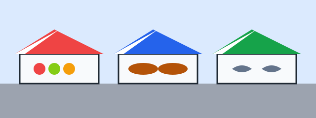

Articles
Select the Summer tab to see the articles of the summer.

How to store bread for a week
Keep the loaf in a paper bag at room temperature, and freeze the slices you do not eat on the first day.
Seasonal produce guide
The table shows the produce of the spring months.
| Month | Fruit | Vegetable |
|---|---|---|
| March | Rhubarb | Leek |
| April | Rhubarb | Asparagus |
| May | Strawberry | Peas |
Sweetness
The growers measure the sugar of fruit in Brix is the share of sugar in the juice. 12 Brix means 12 grams of sugar in 100 grams of juice.. A ripe strawberry has 8 to 12 Brix.
From the growers
Les fraises de mai sont les plus douces de l'année.
A grower from the bay, in French: the strawberries of May are the sweetest of the year.
Fish market calendar
The boats land cod in the winter, mackerel in the summer, and crab from May to September.